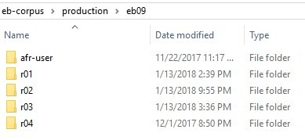

Print Edition Folder
Subdivisions of the print editions for digitization.
Each print edition is large, with 20-29 volumes of 1,000 pages each. The entries within each edition are arranged alphabetically. We retain this semantic organizational scheme and further subdivide the letter sections into units of 250 pages to work on.
The folder structure reflects this. The print edition folders
(eb03, eb07, eb09,
and eb11) contain subfolders for section
whose names begins with the entry letter, followed by a two-digit number referring to
the first, second, third, and so on, sequence of 250-pages of the print text:
a01, a02, a03, … .
Note: Print edition
sections do not refer to page numbers in the print
volumes. They reference units of 250-pages beginning with the first 250
pages of the of the entry-letter, the second 250-pages, and so on. This shorthand
makes it possible to find material without having to know the specific print volume
and page number details.
Figure: Print edition folder

The afr-user folder contains the custom dictionaries and user files for use with ABBYY FineReader. There is one set of user files for each edition. See OCR Tab and Areas and Text Tab. The other folders are alphabetical divisions of the print edition containing the section folders (r01, r02, r03, ... ).